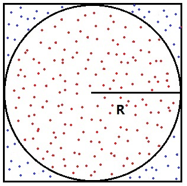

Lab 2: Estimating π Using Random Sampling
1. Objectives
Practice nested loops, conditional statements, cumulative counters, type conversion, and floating-point calculations in C. Use random sampling to estimate π and observe how the result varies with the sample size and random seed.
2. Experimental Task
Consider a square with an inscribed circle of radius R. The square has side length 2R, so the ratio of the circle’s area to the square’s area is:
Acircle / Asquare = πR2 / (4R2) = π / 4
If a large number of points are sampled uniformly at random within the square, the proportion that fall inside the circle approximates this area ratio. Multiplying that proportion by 4 gives an estimate of π.

Algorithm: Fixed Sample Budget
This is a simple Monte Carlo method: it estimates a quantity using random samples. Use the square [−1, 1] × [−1, 1] and the unit circle centered at the origin. A point (x, y) is inside or on the circle if x2 + y2 ≤ 1. No square-root calculation is needed.
Choose two positive integers before sampling: N, the number of points per batch, and K, the number of batches. Start with N = 1,000 and K = 100. Generate exactly K batches, for a total of T = N × K points. You may set these values as constants in your program; keyboard input is not required.
In each batch, generate N random points and count how many fall inside the circle. Add the new counts to the cumulative totals, then recompute the estimate using all points generated so far. Keep the cumulative counters across batches; reset only a batch-specific counter, if you use one.
Let Mk be the number of points inside the circle in round k. The successive estimates are:
- After round 1: p1 = 4M1 / N.
- After round 2: p2 = 4(M1 + M2) / (2N).
- After round 3: p3 = 4(M1 + M2 + M3) / (3N).
After each batch, print the batch number, cumulative number of sampled points, and current estimate of π. Stop after exactly K batches and print the final estimate. Do not stop based on the difference between consecutive estimates.
More samples generally improve the estimate, but an individual update can move it farther from π. No particular number of correct decimal places is guaranteed. Dividing the samples into batches lets you observe progress; all previously sampled points still contribute to the estimate.
Pseudocode
Initialize both cumulative counters and the batch counter to zero. Compute the first estimate only after generating the first batch, so that the total sample count is nonzero.
Choose positive integers N (points per batch) and K (number of batches)
Initialize the random number generator once
Set total_points and total_inside to 0
Set batch to 0
while batch < K
Generate N random points
Count the M points that lie inside the circle
Add N to total_points
Add M to total_inside
Calculate the estimate of pi from the cumulative counts
Increase batch by 1
Output the batch number, total_points, and current estimate
end while
Output the final estimate of piYour program should:
- Use
whileandforloops appropriately. - Use an outer
whileloop for exactly K batches and an innerforloop for exactly N points per batch. - Be checked with step-by-step debugging.
- Account for the ranges of the variables used, especially the cumulative counters.
Hints
In
main, seed the random number generator once, before entering the loops. Start withsrand(1);so that you can reproduce a run while debugging. Include<stdlib.h>forsrand()andrand(). Change the seed for the repeated experiments below; do not reseed inside either loop.The C library function
rand()returns an integer in the inclusive range [0,RAND_MAX]. The macroRAND_MAXspecifies its maximum possible return value. Use a cast and scaling to convert the result to a floating-point value in the desired range. For example:double d = (double)rand() / (double)RAND_MAX; /* 0.0 <= d <= 1.0 */Convert
dto a coordinate in [−1, 1] using2.0 * d - 1.0. Callrand()separately for each coordinate; do not reuse the same random value for both x and y.Use floating-point arithmetic when computing the estimate of π as well, so that integer division does not discard the fractional part. Additional details about pseudorandom numbers appear below.
Use
long longfor cumulative point counts anddoublefor coordinates and estimates. Print along longwith%lldand an estimate with, for example,%.6f. Printing six decimal places does not mean that all six are accurate. If you calculate the sample budget from integer variables, use1LL * N * Kto perform the multiplication aslong long.
C Program Outline
Complete the following outline by adding the variables, loops, calculations, and output statements.
#include <stdio.h>
#include <stdlib.h>
#include <time.h>
int main(void)
{
const int N = 1000; /* Points per batch. */
const int K = 100; /* Number of batches. */
const unsigned int seed = 1;
/* Declare and initialize the counters and other variables. */
/* Use long long for cumulative point counts and double for estimates. */
srand(seed);
/* TODO: Write an outer while loop that processes exactly K batches. */
/* TODO: Inside it, write a for loop that generates N points. */
/* For each point: generate x and y in [-1, 1]. */
/* Test whether x*x + y*y <= 1.0 and update the counts. */
/* After each batch: calculate pi using all points generated so far. */
/* Print the batch number, cumulative sample count, and estimate. */
/* Remember to advance the outer-loop counter. */
/* Use printf() to display the final estimate of pi. */
return 0;
}3. Requirements
Programming and Debugging
Complete the C program outline. Display N, K, and the seed at the start of each run, the progress after every batch, and the final estimate. Your output values may differ across C library implementations; there is no single required numerical result.
First debug a small run with N = 5 and K = 2. Step through the loops and inspect the coordinates and counters. Check that the final total is 10, the inside count never exceeds the total, and each estimate is between 0 and 4. Then use the larger settings below.
Experiment A: Sample Size and Random Variation
Keep N = 1,000. Try K = 10, 100, and 1,000, giving total sample sizes of 10,000, 100,000, and 1,000,000. For each setting, run the program with seeds 1, 2, 3, 4, and 5. This produces 15 runs. Record each final estimate and its absolute error in a table with columns for N, K, total points, seed, estimate, and absolute error.
For evaluating the results only, use 3.141592653589793 as a reference value. Calculate the absolute error as fabs(estimate - 3.141592653589793) with <math.h>, or calculate it separately after the run. Do not use the reference value to generate samples, calculate the estimate, or control the loops.
For each total sample size, calculate the mean absolute error across the five runs. Discuss whether larger samples generally reduce the error, whether every run improves, and whether each batch moves the estimate closer to π. Five runs illustrate variation; they do not establish a guaranteed accuracy.
Experiment B: Batch Size versus Total Sample Size
Keep the total at 100,000 points and the seed at 1. Compare (N, K) = (100, 1,000), (1,000, 100), and (10,000, 10). Generate each point in the same order, calling rand() exactly twice per point, with no other random-number calls.
Compare the final estimates and the number of progress lines printed. With the same implementation and seed, these runs should use the same points and produce the same final estimate. Explain why changing the batch size alone does not improve the final accuracy when the total sample size is fixed.
Discussion: Does a Stable Estimate Mean an Accurate Estimate?
Suppose the first batch contains 10 points, of which 8 lie inside the circle. The second batch also contains 10 points, of which 8 lie inside. Calculate the cumulative estimate after each batch and the difference between the two estimates. Would stopping when that difference is below 0.01 guarantee an absolute error below 0.01? Explain why or why not.
What to Submit
- Your completed C source file.
- The results table for Experiment A and a comparison of the three runs in Experiment B.
- Brief answers to the experiment questions and the discussion question.
4. Additional Notes on Pseudorandom Numbers in C
The C standard library provides rand() to generate pseudorandom integers in the inclusive range [0, RAND_MAX]. Include <stdlib.h> to use rand(), srand(), and RAND_MAX.
For a positive integer n, the expression rand() % n produces an integer between 0 and n − 1. This is a simple way to restrict the range, but the outcomes may not be equally likely because of modulo bias. For this exercise, generate floating-point coordinates using the scaling method shown above.
The numbers returned by rand() are pseudorandom: they follow a deterministic sequence that appears random. A seed initializes that sequence. The same seed reproduces the same sequence on the same implementation. If you do not call srand(), the generator behaves as though it had been seeded with 1.
Use the specified fixed seeds for the experiments so that results can be reproduced. For additional exploration, you may instead include <time.h> and call srand((unsigned int)time(NULL)) once at the start. Runs started within the same second may receive the same seed.
srand(1); /* Seed once, before the loop. */
for (int i = 0; i < 5; i++) {
printf("%d\n", rand());
}This fragment prints five pseudorandom integers; values may repeat. Run it twice with seed 1, then change the seed to 2 and compare the sequences. Reproducibility applies to the same random-number implementation; different systems may produce different sequences.